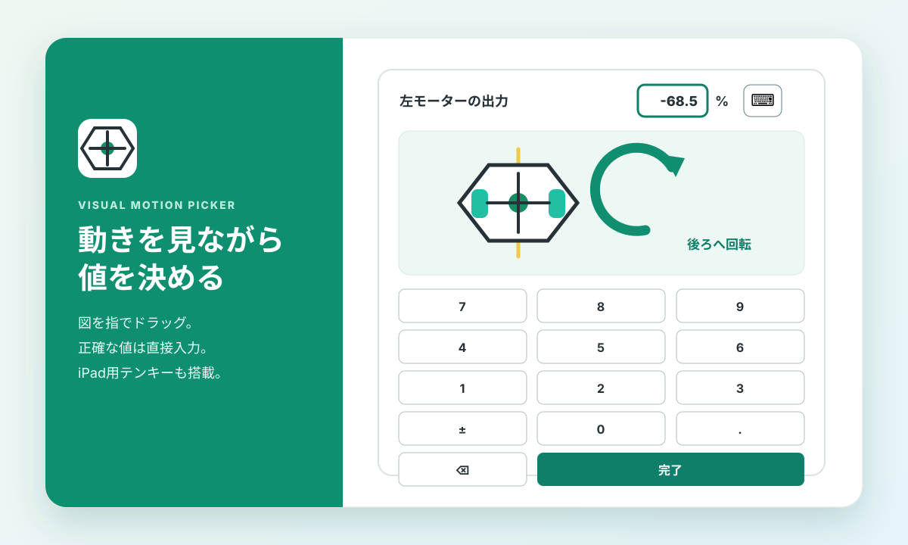
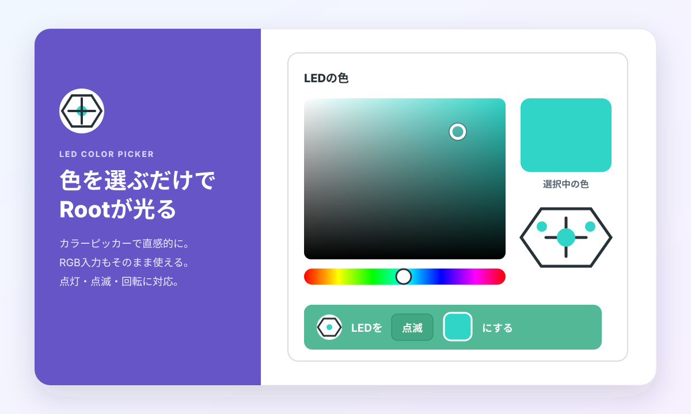

見て、触って、すぐ分かる
数値だけでは想像しにくいロボットの動きを、図と操作パネルで分かりやすくしました。マウスでも指でも操作でき、必要なときは正確な数値も入力できます。
図をドラッグして動きを指定
小数・負数を直接入力
iPad用の画面内テンキー

-68.5 のような精密値も指定できます。
Scratchらしさを保った操作
ピアノ鍵盤で音階を選び、Rootで短く試聴できます。従来の数値入力や演算ブロックも引き続き使えるため、入門から高度な作品まで同じブロックで発展できます。
PCとiPadで共通
PCではマウス、iPadでは指で操作できます。数値欄をタップすると数字キーボードが開き、さらに画面内テンキーも選べます。
はじめかた
- Rootの電源を入れ、端末の近くへ置きます。
- 上の「Xcratchで開く」を押します。
- 「Rootに接続する」を実行し、一覧からRootを選びます。
- LEDや音を試してから、低速のモーター命令へ進みます。
App Store版Scrubは無改造で利用できます。 Rootとmicro:bit More v2の同時接続も実機確認済みです。接続先のWebエディターには標準Scratch Linkマーカーが必要ですが、公式Xcratchは2026年8月7日現在、この条件に対応済みです。詳しくはGitHubのREADMEを確認してください。
主な機能
動かす
Rootの動きを図で確認しながら、左右モーター、距離、回転、円弧の値をドラッグ、直接入力、iPad対応テンキーで指定できます。
光・音・描画
カラーピッカーまたはRGB値でLEDの点灯・点滅・回転を指定し、発音、マーカーと消しゴムを制御します。
イベント
左右バンパー、4か所のタッチ、崖、バッテリー通知をHATブロックで受け取ります。
複数台から選択
近くのRootを検索し、デバイス一覧から接続先を選べます。
配布ファイル
Extension Loaderには https://naominix.github.io/xcx-irobot-root/irobotRoot.mjs を指定します。